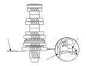
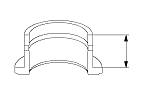
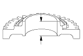
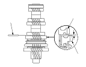
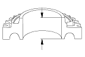

M/T Countershaft Assembly Clearance Inspection
NOTE:
Before inspection, make sure the special bolt is tightened to the specified torque.
Measure the clearance between 1st gear (A) and the distance collar (B) with a feeler gauge (C).
If the clearance is more than the service limit, go to
Step 2
.
If the clearance is within the service limit, go to
Step 4
.
Standard:
0.06−0.16 mm (0.002−0.006 in.)
Service Limit:
0.25 mm (0.010 in.)

Measure the length of the 1st gear distance collar as shown.
If the length is not within the standard, replace the 1st gear distance collar.
If the length is within the standard, go to
Step 3
.
Standard:
23.03−23.08 mm (0.907−0.909 in.)

Measure the thickness of 1st gear.
If the thickness is less than the service limit, replace 1st gear.
If the thickness is within the service limit, replace the 1st/2nd synchro hub and reverse gear as a set.
Standard:
22.92−22.97 mm (0.902−0.904 in.)
Service Limit:
22.87 mm (0.900 in.)

Measure the clearance between 2nd gear (A) and 3rd gear (B) with a feeler gauge (C). If the clearance is more than the service limit, go to
Step 5
.
Standard:
0.06−0.16 mm (0.002−0.006 in.)
Service Limit:
0.25 mm (0.010 in.)

Measure the length of the 2nd gear distance collar.
If the length is not within the standard, replace the 2nd gear distance collar.
If the length is within the standard, go to
Step 6
.
Standard:
28.03−28.08 mm (1.104−1.106 in.)
Measure the thickness of 2nd gear.
If the thickness is less than the service limit, replace 2nd gear.
If the thickness is within the service limit, replace the 1st/2nd synchro hub and reverse gear as a set.
Standard:
27.92−27.97 mm (1.099−1.101 in.)
Service Limit:
27.87 mm (1.097 in.)
